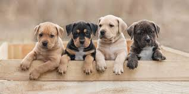
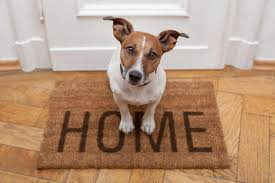
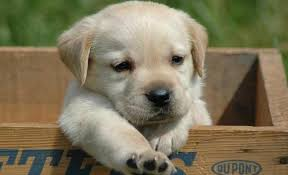

Adoção

Todo final e início de ano é a mesma coisa: os Centros de Controle de Zoonoses (CCZ) e ONGs de proteção animal ficam com seus abrigos lotados. A maioria dos bichinhos foi abandonada por conta das férias - muitas famílias não querem levar o animal e simplesmente o abandonam na rua. Outros foram presentes de Natal e acabaram descartados diante dos muitos cuidados que necessitam.
Além disso, o comércio de animais de estimação ainda é muito forte e incentivado no Brasil, fazendo com que animais abandonados tenham sua chances de um novo lar reduzidas e os animais comercializados continuem sofrendo os maus tratados de seus comerciantes. Toda essa situação é caótica e prejudical aos bichinhos que tanto amamos e pode ter seu impacto um pouco reduzido se você escolher adotar e garantir uma nova realidade para um pet e ganhar um novo membro na família extremamente carinhoso e leal!
Cada vez mais, campanhas pelo Brasil estão incentivando a prática de adoção no lugar de comprar um animal "novo em folha". A variedade é grande: cães e gatos de todos os portes, raças e idades estão disponíveis em vários abrigos pelo Brasil.
Tamanho e idade, aliás, são dados que devem ser levados em consideração na hora da adoção. "Filhotes são como crianças, precisam de mais atenção, devem ser educados constantemente e mordiscam, pulam, querem brincar o tempo todo e podem derrubar as pessoas", explicou a veterinária Mônica Almeida, responsável pelo setor de adoção do CCZ de São Paulo. "Já os mais velhos são mais tranquilos, não precisam de tantas repetições para ser ensinados e podem ficar mais tempo sozinhos", diz.

A decisão
Outra reflexão importante a ser feita antes da adoção são os motivos que levam a adotar. Um cão ou gato vai viver com a família, no mínimo, pelos próximo dez anos. "Ele requer tempo, atenção e gera despesas com alimentação, saúde, higiene e lazer", afirmou Rafael Miranda, coordenador da ONG Cão sem Dono, em São Paulo. "Tudo isso deve ser colocado na balança antes de tomar a decisão", disse.
Sabemos o quanto é difícil resistir ao passar por uma feira de adoção de cães, a vontade de levar todos para casa é grande, mas, antes, é preciso considerar alguns fatores para escolher o novo filhinho de quatro patas.
Uma vez que a família esteja de acordo, é hora de encontrar o animal certo. "Não basta pegar o primeiro que encontrar na rua", aconselhou Rafael Miranda. "Você tem que 'namorar' o animal e ver se ele também gosta de você", diz. A busca pode começar pelo CCZ da sua cidade ou estado, ou em ONGs locais, que possuem animais em seus abrigos. Manaus, Cuiabá, Curitiba, Belo Horizonte e Florianópolis são algumas das localidades em que os centros são muito procurados por pessoas interessadas em um animal de estimação.
Por isso, anexamos mapas dessas regiões com as localidades dos principais pet shops e canis que realizam o processo de adoção. Caso tenha interesse clique aqui para acessá-los!
Outra forma de encontrar o animalzinho é dar uma busca pelos sites de entidades de proteção ao animal de todo o País, que colocam fotos e dados sobre os bichos disponíveis para adoção. A maior parte dos animais é entregue castrada, vacinada e vermifugada.
Também montamos um pequeno e rápido quiz para você entender melhor qual o melhor cachorrinho para você de acordo com a sua personalidade e rotina! Se quiser acessá-lo cique aqui!
Parte burocrática
Há também a parte burocrática. O adotante precisa ser maior de 21 anos, apresentar RG, CPF, comprovante de residência recente assinar um termo se comprometendo a cuidar do animalzinho, que agora passa a ser de responsabilidade dele. No CCZ de São Paulo, é preciso pagar uma taxa de R$ 16,20, pois o trâmite inclui a carteirinha do RGA (Registro Geral do Animal), uma plaqueta e um microship de identificação. É necessário levar guia (para cães) ou caixa de transporte (para gatos).
Cuidados após a adoção

Depois de seguir todas essas dicas e ter a certeza de que deseja escolher um cãozinho para integrar sua família, saiba que é preciso estar atento a alguns cuidados fundamentais.
Para começar, não pense que eles são independentes e estão imunes a doenças, ao contrário, assim que levar o pet para casa, procure um veterinário e faça um check-up completo.
Somente o especialista vai poder orientar sobre as e colocar o cartão médico em dia. Além disso, certifique-se de garantir alguns acessórios básicos, como caminha, fraldas higiênicas, comedouros e bebedouros.
Primeiros dias
Os primeiros dias em uma nova casa podem ser desafiadores para um cachorro adotado. Ele vai precisar se adaptar a novas pessoas (talvez até a novos irmãos peludos!) e a um ambiente completamente diferente. Por isso é tão importante compreender caso aconteça um estranhamento ou ele chore, fique assustado ou agressivo.
Ao adotar um cachorro, tente deixá-lo o mais livre possível para que comece a se sentir confortável. Ele pode fazer xixi ou cocô no lugar errado ou não se comportar perfeitamente nos primeiros dias, mas é preciso ter paciência. Aos poucos e com a sua ajuda, ele vai aprender e tudo vai ficar mais simples.
Certifique-se de que sua casa está equipada com todo o necessário antes da adoção de cachorro. Veja o que é preciso comprar para que ele se alimente, faça exercícios e fique confortável para dormir e brincar.
Rotina
Depois de um período inicial de adaptação do seu cachorro adotado, é importante começar a pensar em temas como adestramento e exercícios regulares. Você pode começar ensinando truques básicos em casa mesmo, como a sentar, dar a pata e deitar e, se sentir necessidade, procurar a ajuda de um profissional para tarefas mais complexas.
Lembre-se de que, após a adoção de cachorro, você precisa proporcionar atividades regulares para garantir o bem-estar físico e mental do peludo. Os benefícios do passeio são inúmeros, especialmente para cães não tão dóceis e muito agitados. Se não tiver tempo para sair por aí com ele, considere contratar um dog walker para fazer isso por você. Acredite: isso pode poupar muitos móveis roídos!
Viagens

Ninguém gosta de se separar do seu peludo. Mas viagens a trabalho e até mesmo a lazer acontecem, e o mais importante é garantir que o cachorro seja bem cuidado e siga a mesma rotina na ausência do tutor.
Muitos dos pets adotados foram abandonados nas ruas nos fins de ano, durante férias em que os donos precisavam viajar, então é preciso ter todo o carinho e atenção com os animais em um período tão desagradavél para eles :)
Na DogHero, você encontra anfitriões perto de casa que fazem exatamente tudo do jeito ao qual ele está acostumado – pode até dormir na cama e subir no sofá!
E o mais importante: os Anfitriões são apaixonados por cachorro. Cães que foram abandonados passaram por bons bocados e podem ser sensíveis. Eles merecem todo carinho, especialmente durante a ausência do tutor.